腎臟超音波 · jamesxxx1997 影像筆記
偶然發現腎腫塊的超音波處置流程 · 高回音病灶 AML vs RCC 鑑別 · 實質腫塊 US 圖鑑
① 偶然發現的腎腫塊 · 超音波處置流程[2]
依 CAR 針對「第一線由超音波發現病灶」的專屬流程（Flowchart 3）：先分實質 / 囊性，再依回音特徵與大小（1.0 cm 為分界）決定追蹤或進階影像。
1 · 病灶性質
選擇…
實質 Solid appearing
囊性 Cystic
2 · 回音 / 複雜度
請先選病灶性質…
3 · 大小
選擇…
≤ 1.0 cm
> 1.0 cm
產生處置建議
Renal cyst 超音波區分原則
Minimally complex（偏良性）
Thin、smooth；few / multiple fine septa 或 fine calcification；no wall thickening；no nodule；no solid component；no flow。
Complex / atypical（需進階）
Thick / irregular wall or septa；mural nodule / solid component；vascularity / enhancement；或 internal debris 合併 thick irregular wall。
超音波在其他流程中的「降階 / 替代 / 追蹤」角色
此 CAR 指引與原版 ACR 最大分歧：開放讓超音波替代部分原本依賴 CT/MRI 的評估與追蹤，以節省資源。
情境 超音波的角色
Flowchart 1 建議「優先考慮超音波」做初步調查，而非直接 MRI / 顯影 CT。 Flowchart 2 超音波列為首選進階評估工具之一。 Flowchart 4 超音波為追蹤「首選模式」（精準評估大小、中隔厚度與結節變化）；僅在發現壁增厚 / 變不規則 / 產生血流，或看不清時才切回 CT / MRI。 Flowchart 5 可用超音波做監視追蹤 (surveillance)，更具成本效益。
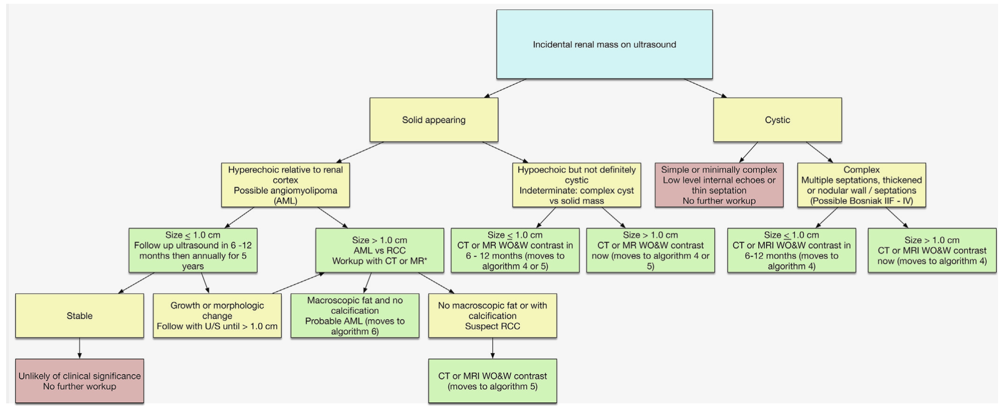
CAR Flowchart 3 — 超音波意外發現腎腫塊的專屬處置流程。
② 高回音病灶 · 超音波鑑別 AML vs RCC
核心痛點：超音波的高回音並非 AML 專利。
高達 55% 的「無鈣化高回音」腎腫塊其實是 RCC。 [4] RCC 呈高回音的原因在於內部微囊狀結構 (microcystic architecture)、壞死、出血、乳頭狀 / 管狀結構或微小鈣化，產生大量聲波反射介面。因此看到高回音絕不能直接當作 AML。
一、內部與邊界特徵（B-mode 灰階）[4]
超音波徵象 AML RCC 臨床鑑別意義
無回音環 0%
高達 84%
極具鑑別力。RCC 生長時壓迫周圍組織形成「假包膜 (pseudocapsule)」而產生無回音環；AML 顯微鏡下常與周圍組織交錯浸潤、無明確包膜。
腫瘤內囊腫 0%
常見（伴後方回音增強）
支持 RCC。RCC 內部易囊性退化 / 壞死；AML 極少出現囊性結構。
後方聲影 約 21%
0%
支持 AML。排除結石後，高回音伴後方聲影是 AML 特徵之一。
Color Doppler 脂肪成分內無血流；軟組織 / 血管成分可能有
可見腫瘤內血流
脂肪區塊無血流支持 AML；但軟組織成分亦可有血流，需合併其他徵象。
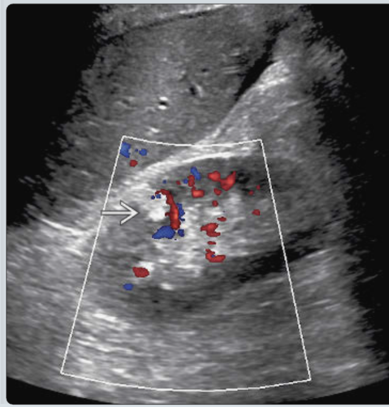
Color Doppler — 脂肪成分內無血流。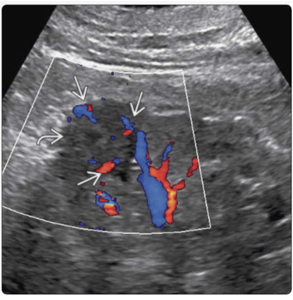
Color Doppler — 軟組織 / 血管成分可見血流。
二、腫瘤幾何形狀與邊界介面（McGahan 等人）[3]
觀察腫瘤長大的「形狀」與「和腎臟邊界的夾角」，可大幅提升區分零星型 AML 與 RCC 的準確率。
超音波外觀形態 AML RCC 說明
形狀 Shape 常為橢圓形 Oval 幾乎為圓形 Round
RCC 細胞緻密、傾向球形膨脹；AML 含脂肪質地軟，順著周邊組織擠壓成橢圓形。 成角介面 常見（周邊型 AML） 罕見
AML 質地軟，在腎緣生長時與正常皮質交界易形成銳角。 滿溢啤酒徵象 出現（周邊型 AML） 幾乎從未出現
腫瘤長在腎緣時，AML 像滿出的啤酒泡沫般「溢出」腎輪廓，RCC 極少見。 高回音邊緣 常見（內生型 AML） 可見
內生型 (endophytic) AML 相較 RCC 更常表現明顯的高回音邊緣。
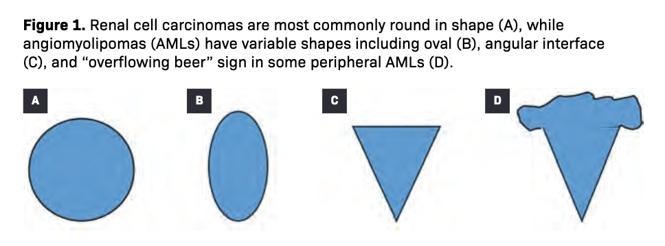
幾何形狀與邊界介面示意 — shape / angular interface / overflowing beer。
三、代表影像
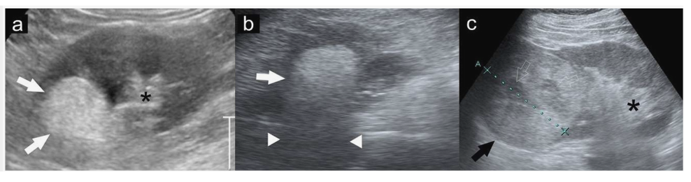
Figure 1 — (a)(b) AML：極高回音，亮度≈腎竇脂肪（★），伴後方聲影；(c) RCC：沒那麼亮，外圍低回音暈 + 內部囊腔黑洞。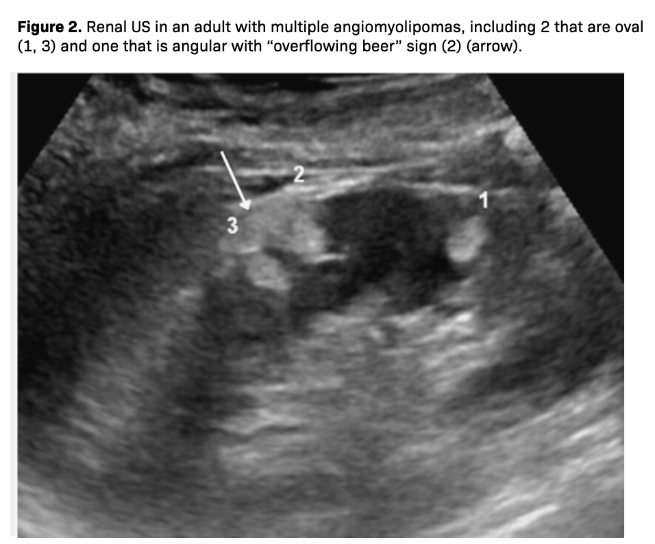
Figure 2 — 多發 AML：(1)(3) 橢圓形、(2) 邊緣銳角介面（脂肪柔軟被擠壓成形）。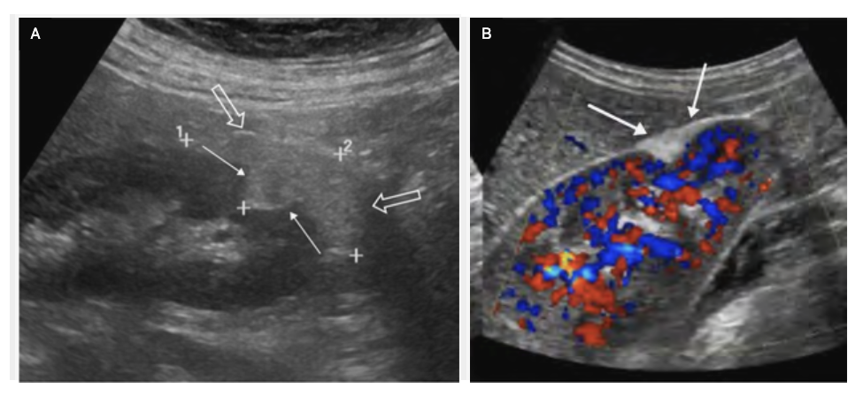
Figure 3 — 大型周邊型 AML：成角介面 + 整顆「溢出」腎輪廓的滿溢啤酒徵象。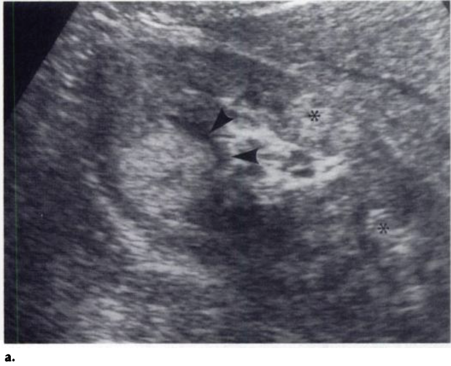
Figure 3（VHL 病患） — 極亮的 RCC，箭頭處可見黑色無回音環。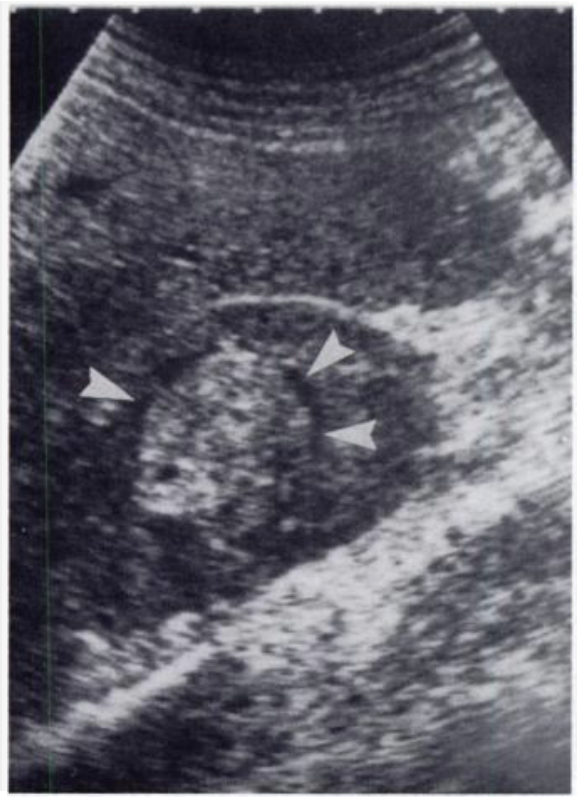
Figure 4 — 微亮 RCC：黑色細環 + 內部廣泛壞死 / 囊腫形成的黑色小空洞。
③ 實質腫塊 · 超音波圖鑑
各病種在無顯影超音波上的一般表現與陷阱。先記一條快速判讀原則：
Renal parenchymal disease 快速判讀： 正常 renal cortex 比 liver parenchyma 還黑；若 cortex 比 liver 還亮，就要懷疑 renal parenchymal disease。
血管平滑肌脂肪瘤 AML（Angiomyolipoma）[3]
血管 + 平滑肌 + 脂肪；起源於微血管周圍 pericytes；女性多見（雌激素促生長）
致病關聯： > 80% 為散發性；少數與 結節性硬化症 (TSC) 或 淋巴管平滑肌增生症 (LAM) 相關。TSC 病患約半數有腎 AML，且較年輕、多發、雙側、體積大、持續生長。病理分型： 典型變異型（絕大多數，良性）；上皮樣變異型 含上皮樣細胞、可能完全無脂肪 ("fat-invisible")、具潛在惡性風險（可能轉移） ，TSC 較常見。出血風險（最可怕併發症，可致命的 Wunderlich 症候群）因子： 腫瘤 > 6 cm、血管豐富、瘤內動脈瘤 > 5 mm、外生性生長 (exophytic)。懷孕或含雌激素荷爾蒙療法會增加出血與生長風險。
腎細胞癌 RCC（Renal Cell Carcinoma）[1]
灰階超音波表現非常多變
實質型： 可均質或異質，有時可見壞死區或鈣化點。囊性變異型： 單房或多房囊腫，內部可有「液體-碎屑沈積面 (fluid-debris levels)」（代表出血 / 壞死），伴厚而不規則的囊壁、中隔或實質結節。陷阱：帶假性囊腫特徵的 RCC — 實質、微高回音、有不完整低回音邊緣 + 後方聲影增強，灰階上極易誤認單純囊腫；打開 Color Doppler 見內部充滿血流即確診 RCC。 嫌色細胞型 (Chromophobe)： 均勻、低回音、向外突起 (exophytic)，可向內浸潤扭曲腎竇脂肪。合併慢性腎病： 萎縮腎中長出向外突起的低回音實質腫塊，或帶囊性成分的低回音腫塊。
嗜酸細胞瘤 Oncocytoma
良性，但小腫瘤與 small RCC 難以區分
基本外觀： 小型 Oncocytoma 常為均質 (homogeneous)、與正常腎實質等回音 (isoechoic)、邊界非常清晰 (well-demarcated)。經典徵象的迷思： 星芒狀疤痕 (stellate scar) 與車輪狀血流 (spoke-wheel) 在現代「早期發現、< 4 cm」的小腫瘤幾乎看不到 ——中央疤痕須腫瘤夠巨大（文獻曾在 12 cm 才觀察到）、大到中心缺血壞死機化才形成。
致命傷： 小型 Oncocytoma 在 US 上只是「均質、等回音、邊界清楚」，與約 5–6% 的 small RCC 表現完全重疊。
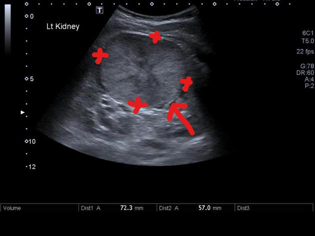
星芒狀疤痕 Stellate scar（大腫瘤才有）。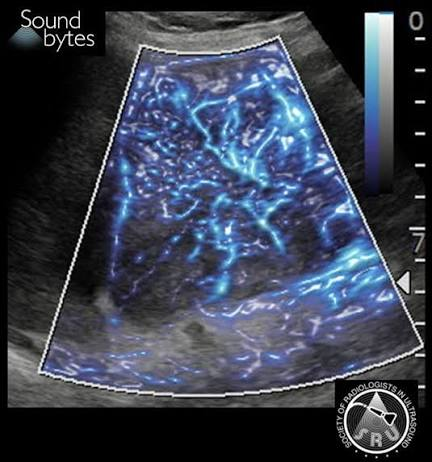
車輪狀血流 Spoke-wheel（Doppler）。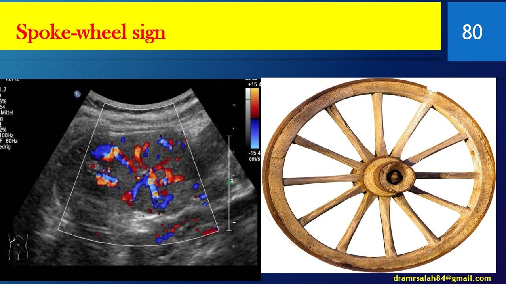
車輪狀血流 Spoke-wheel（Doppler）。
腎臟轉移瘤 Renal Metastases[1]
最常見原發癌：肺癌、乳癌、胃癌、黑色素瘤、淋巴瘤
形態與位置： 通常體積小、圓形（有時楔形），多位於皮質區 (cortical)，很少破壞腎輪廓或包膜（除非大型外突）。回音特徵： 非常多樣 — 低回音、高回音，甚至完全隱形 (sonographically occult)；偶有浸潤性表現。黑色素瘤轉移可見腫瘤延伸 / 出血導致的腎周浸潤。陷阱：假扮 RCC 的黑色素瘤轉移 — 實質、均質、微高回音，US 上與 RCC 無法區分；唯一區別是 Color Doppler 幾乎無血流（遠低於一般 RCC）。
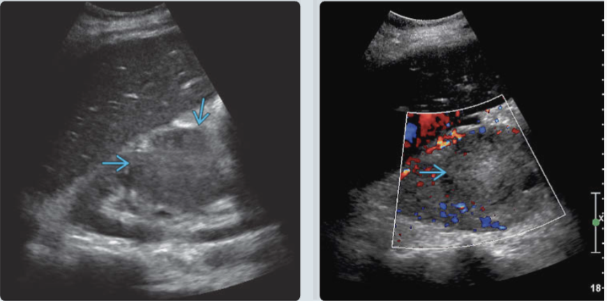
黑色素瘤轉移 — 右腎中極實質微高回音腫塊，灰階上與 RCC 無法區分，Doppler 幾乎無血流。
參考文獻 References
Kamaya A, Wong-You-Cheong J, Woodward PJ, et al. Diagnostic Ultrasound for Sonographers. Elsevier; 2019. ISBN 978-0-323-62516-6.
→ ③ RCC、腎臟轉移瘤的灰階超音波特徵。 Kirkpatrick IDC, Brahm GL, Mnatzakanian GN, Hurrell C, Herts BR, Bird JR. Recommendations for the Management of the Incidental Renal Mass in Adults: Endorsement and Adaptation of the 2017 ACR Incidental Findings Committee White Paper by the Canadian Association of Radiologists Incidental Findings Working Group. Can Assoc Radiol J. 2019;70(2):125–133. doi:10.1016/j.carj.2019.03.002
→ ① 偶發腎腫塊處置流程（Flowchart 1–5）與 renal cyst 區分原則。 McGahan JP, Vollmer CM. New Trends in Diagnosis and Imaging Follow-Up of Renal Angiomyolipomas — Part I: Classic AMLs. Applied Radiology. 2025 Apr.
→ ② 腫瘤幾何形狀與邊界介面（shape / angular interface / overflowing beer）；③ AML 病理與出血風險。 Yamashita Y, Ueno S, Makita O, Ogata I, Hatanaka Y, Watanabe O, Takahashi M. Hyperechoic Renal Tumors: Anechoic Rim and Intratumoral Cysts in US Differentiation of Renal Cell Carcinoma from Angiomyolipoma. Radiology. 1993;188(1):179–182.
→ ② 高回音病灶的 B-mode 徵象（anechoic rim 84%、intratumoral cysts；55% 高回音腫塊為 RCC）。
Oncocytoma 段之經典徵象迷思（stellate scar / spoke-wheel 於小腫瘤罕見、與 small RCC 重疊）另引自筆記中的專篇論文，未含於上列 PDF。
📗 由本人影像筆記整理製作 · 參考文獻見上。臨床應用請以最新指引與個別病人情況為準。